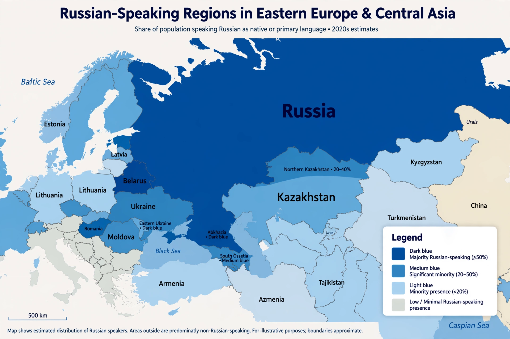

Russian language

Native to: Russia, Belarus, Kazakhstan, Kyrgyzstan and across the former Soviet Union
Native speakers: c. 150 million; c. 260 million total
Language family: Indo-European → Balto-Slavic → East Slavic
Writing system: Cyrillic (Russian alphabet, 33 letters)
Official language in: Russia, Belarus, Kazakhstan, Kyrgyzstan; one of six UN languages
Russian (русский язык) is an East Slavic language of the Indo-European family and the most geographically widespread language of Eurasia. It is the largest native language in Europe, the official language of Russia and a co-official language in Belarus, Kazakhstan and Kyrgyzstan, and remains a lingua franca across much of the former Soviet Union. Russian is one of the six official languages of the United Nations.
History
Russian descends from Old East Slavic, the language of Kievan Rus', and was strongly influenced by Old Church Slavonic in its literary register. Under Peter the Great the alphabet was reformed into the "civil script" (1708), and the 18th-century writer Mikhail Lomonosov codified its grammar. Alexander Pushkin (1799–1837) is credited with founding the modern literary language. A 1918 reform simplified the orthography, dropping letters such as yat and hard signs at word ends.
Grammar
Russian is a highly inflected language with six cases, three genders, and a verbal system centred on aspect: almost every verb exists in an imperfective/perfective pair. Word order is flexible because case endings mark grammatical roles. It is written in the Cyrillic alphabet of 33 letters. See Grammar and Phonetics.